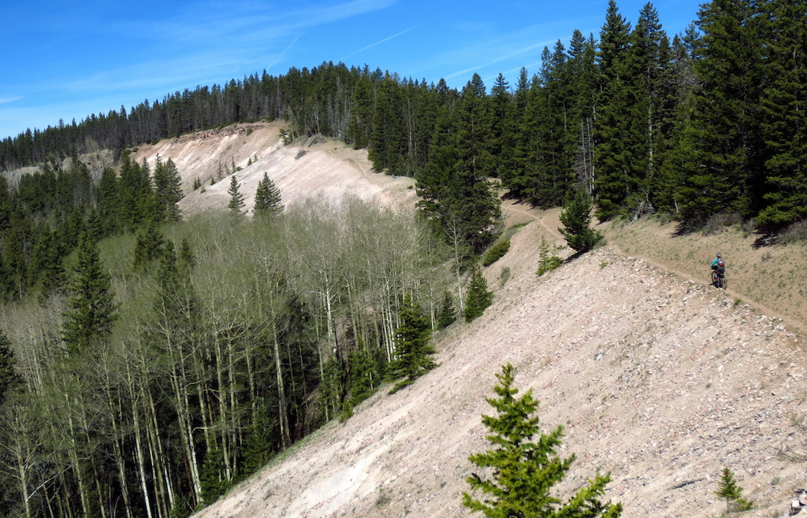

Cycle the Continental Divide

Ride the longest off-pavement route in the world.
The Great Divide Mountain Bike Route is The Mountain Spoke's premier off-pavement cycling route, crisscrossing the Continental Divide north to south. This route is defined by the word "remote." Its remoteness equates with spectacular terrain and scenery. The entire route is basically dirt-road and mountain-pass riding every day. In total, it has over 200,000 feet of elevation gain. Roughly 80% of it is composed of county, Forest Service (USFS), and Bureau of Land Management (BLM) dirt and gravel roads. The remainder is made up of four-wheel-drive tracks and singletrack trails (10%), and paved roads (10%).
Great Divide Mountain Bike Route Banff, AB to Antelope Wells, NM (2768.4 mi.)
| Route |
Mileage |
| CANADA - Banff, AB to Roosville, MT |
256.6 miles |
| Roosville, MT to Polaris, MT |
542.3 miles |
| Polaris, MT to South Pass City, WY |
510.4 miles |
| South Pass City, WY to Silverthorne, CO |
403.9 miles |
| Silverthorne, CO to Platoro, CO |
316.5 miles |
| Platoro, CO to Pie Town, NM |
430.1 miles |
| Pie Town, NM to Antelope Wells, NM |
307.8 miles |
With the exception of the Great Basin in Wyoming, you will be either gaining elevation, or descending, for the entire route. The elevations are lower in Montana — building up to the highest passes in Colorado and then tapering back off in New Mexico. However, some of the toughest climbs are in Montana and New Mexico because of the steepness and the poor road quality. And in New Mexico you'll be carrying extra food and water for the serviceless stretches.
This route can be ridden anytime from early summer to mid-fall. Be aware that snow can occur at any time along the route. If it is a heavy snow year, high-elevation roads in the north may not be open until late June or early July.
We discourage you from attempting to ride this route solo; in fact, a minimum group size of three is strongly recommended. If a rider is debilitated in the backcountry, you will want to have at least one person to stay with the injured/sick rider, and another to go for help. A growing number of backcountry travelers are carrying cellular phones for such emergency situations – but be aware that reception is still very spotty along much of the route.
Because June is typically a wet month in the northern Rockies, and often a cold one at the higher elevations, we recommend that you do not attempt to ride prior to late June or early July. High-country snowpack may prevent certain portions from being passable until then, anyway. Concerning the other end of the cycling season, plan on being off the route by mid-October at the latest. Regardless of when you strike out or how long you intend to be there, pack along raingear and cold-weather clothing. Snow or cold rain is possible any day of the year at some of the elevations encountered, and hypothermia is an ever-present possibility.
CLICK HERE TO REGISTER!!